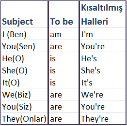

| Özne | Yardımcı Fiil (To be) | Sıfat |
|---|---|---|
| I(Ben) | Am | A student. |
| You(Sen/Siz) | Are | A pencil. |
| We(Biz) | Are | Doors |
| They (Onlar) | Are | Doors |
| He (O Erkek için.) | Is | Doors |
| She (O Kadın için.) | Is | Doors |
| It (O İnsan olmayan şeyler için.) | Is | Doors |
To be fiilinin halleri, Kendinizden bahsediyorsanız (Am), Karşınızdaki veya Çoğul bir grupten bahsediyorsanız (Are), Tekil bir 3.Şahıstan bahsediyorsanız (Is) kullanılır.
